GAME PLANNER / ゲームプランナー
発想力で世界を沸かせたい！
ゲームプランナー！
ゲームの面白さを設計・言語化し、プレイヤーが思わず没頭してしまうような
体験づくりに情熱を注いでいます。企画立案からレベルデザイン
仕様書作成まで、ゲームの「楽しさ」を追求します。

SCROLL DOWN
ゲームの面白さを設計・言語化し、プレイヤーが思わず没頭してしまうような
体験づくりに情熱を注いでいます。企画立案からレベルデザイン
仕様書作成まで、ゲームの「楽しさ」を追求します。
チーム制作、個人制作で修行中！
「面白い」とは何かを考え、遊んでもらうすべての方々にゲームの楽しさを
知ってもらうために動きます！
仕様書や企画書も見やすく、読み手に楽しんでもらう事を意識しています！
企画の面白さを伝えるために世界観をしっかり書き、目に入りやすいレイアウトを意識しています

仕様を伝えるために分かりやすく見やすいデザインで制作しています
特にレベルデザインに力を入れており狙いも同時に書いています

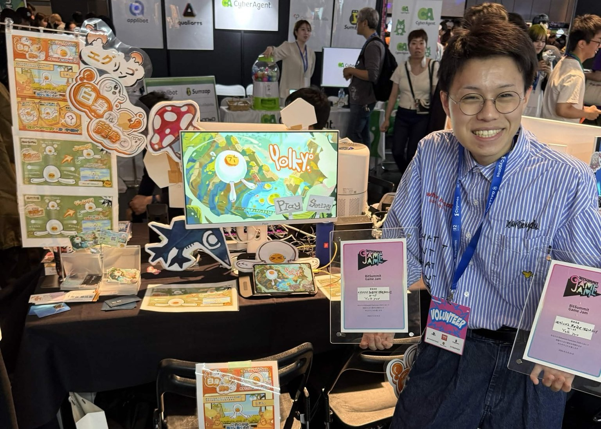
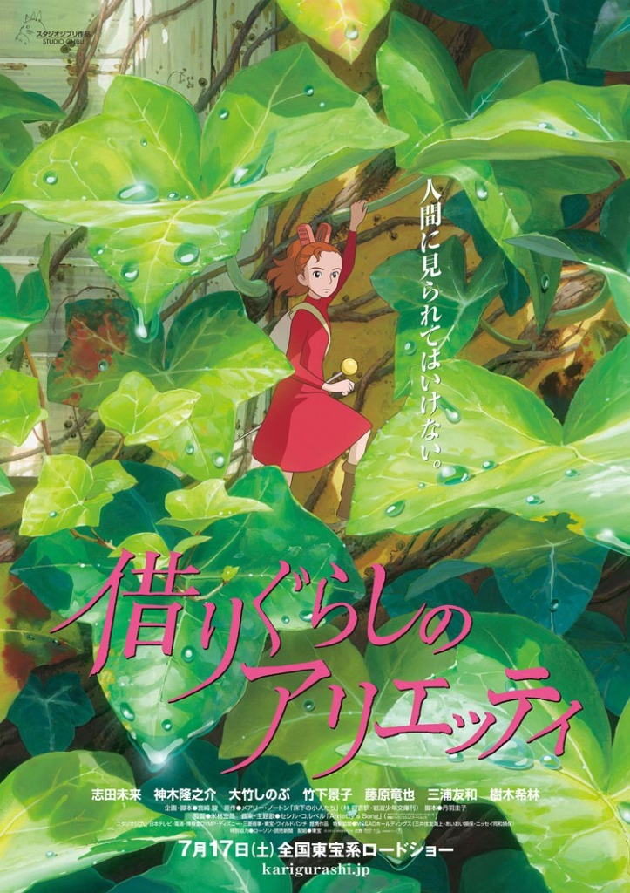
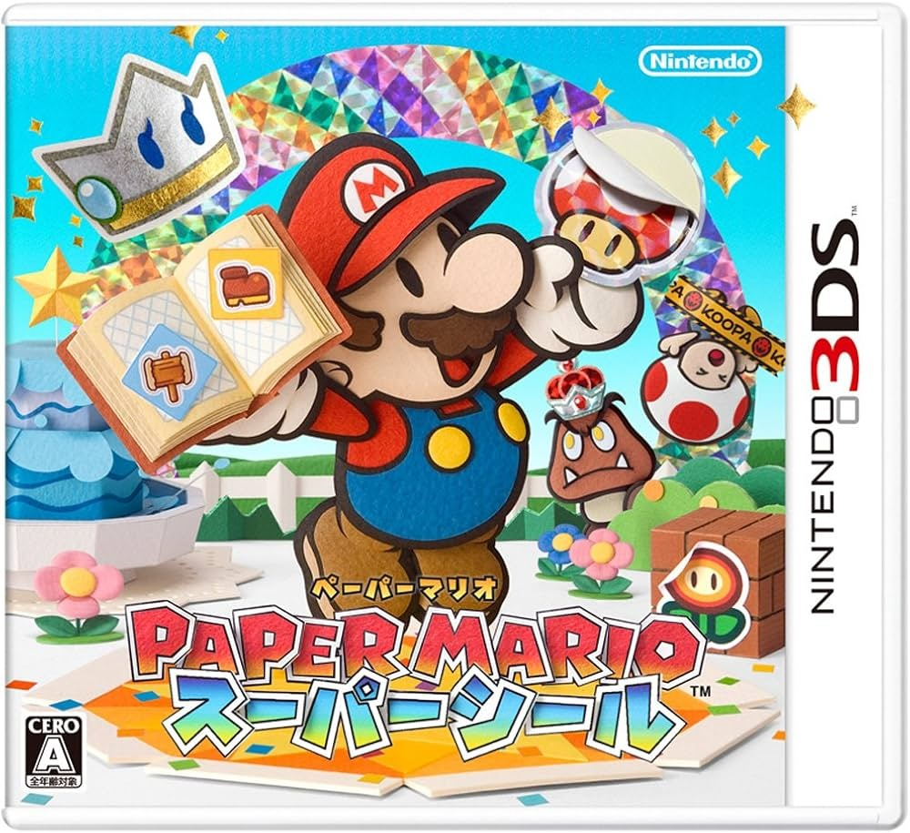
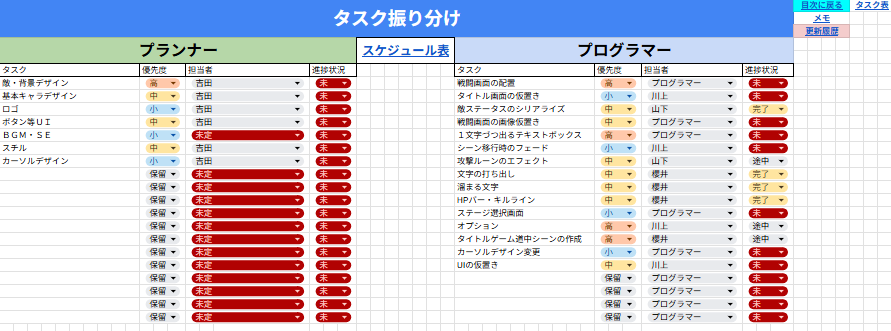
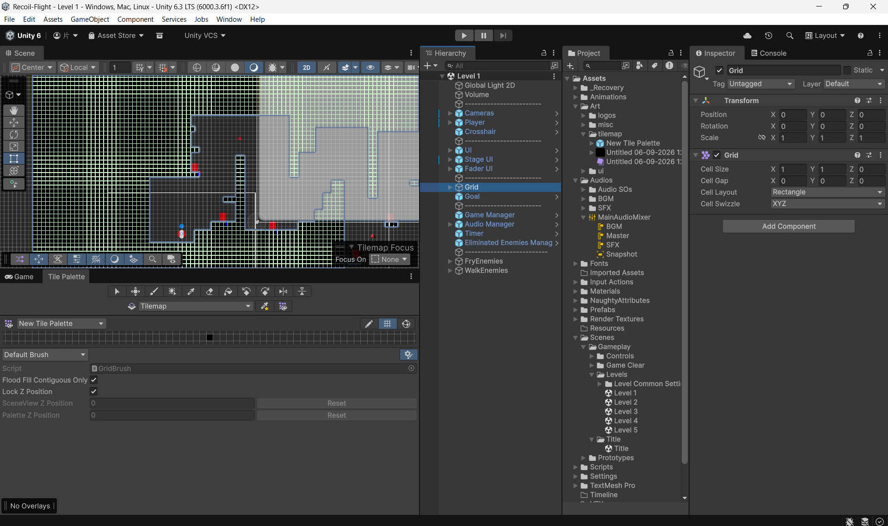
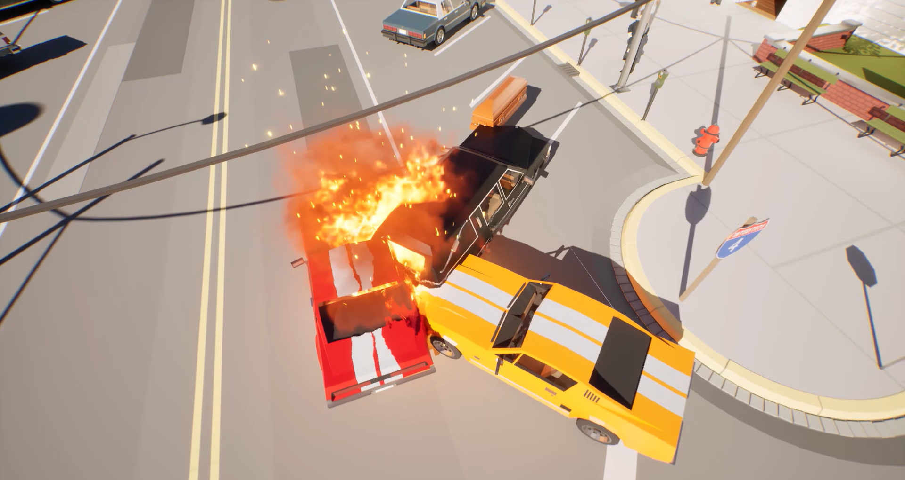
ゲーム制作サークル「ハイミント」の仲間たちと共同で、企画から実装まで役割を分担して制作中です！
後輩育成の場やサークル活動を通じて、メンバーをどう動かし、経験をしてもらうかを考え実行できる
能力を高めることができました！

『Time is Experience』という2Dアクションゲームの企画書です。コンセプト設計から仕様の言語化まで行いました。

10th Crowd Fes ver. Apex Legends WILD CARDにて、チーム「KeSSA」として見事優勝を勝ち取りました！🏆


担当: メインプランナー：レベルデザイン：UI：SE：BGM
出展: Web公開
弾を発射し反動で進もう！感覚と反射神経がカギになる！敵に当たっても死なない！そして敵に弾を当てると弾が復活するぞ！全部で5ステージ！君はクリアできるのか...
 こだわり＆得られた経験
こだわり＆得られた経験
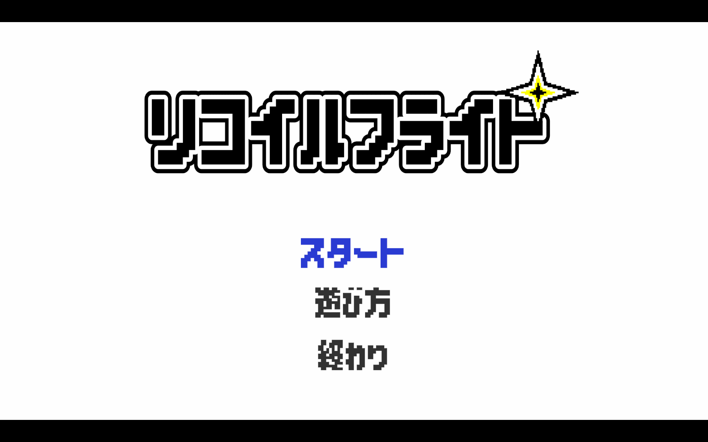

担当: プランナー：仕様書：ギミック担当
出展: GGX NEXUS JAM：GGX Games Showcase展示
おじいちゃんの農園を継いでやってきた少女は、音楽の神様と出会い1年間の契約をします。作物を育てて演奏をする、音楽×農業ゲーム🎶収穫して得たお金で、自分だけの音色に拡張することも……！
 こだわり＆得られた経験
こだわり＆得られた経験
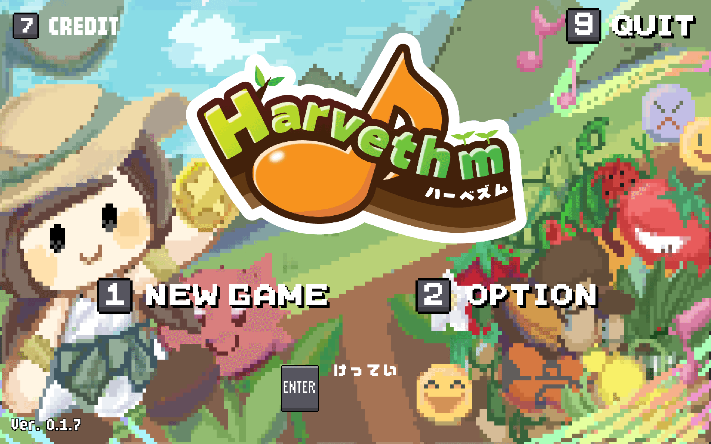

担当: プランナー：仕様書：ギミック担当：レベルデザイン
出展: BitSummit Game Jam 2026：BitSummit PUNCH展示
「あなたは”白身”、黄身をこぼさず目的地までたどり着こう！」キッチンから飛び出し、森を抜け、最後にはなんと○○に進む！道中には、卵を狙うカラスなどたくさんの困難が待ち構える！協力してワイワイ！黄身がこぼれるドキドキ！協力2Dジャンプアクションゲーム！！
 こだわり＆得られた経験
こだわり＆得られた経験
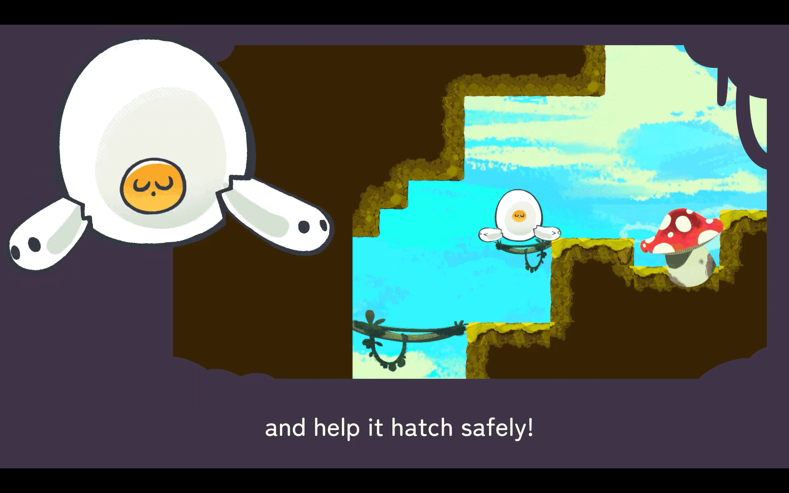

担当: ソロ開発
出展: ゲームパビリオンjp2026 展示：BitSummit PUNCH展示
これは表の世界と裏の世界にいるキューブの物語
キューブの動きは一心同体、赤い敵が襲い掛かって来る中、ジャンプやギミックを駆使しゴールを目指しましょう
 こだわり＆得られた経験
こだわり＆得られた経験
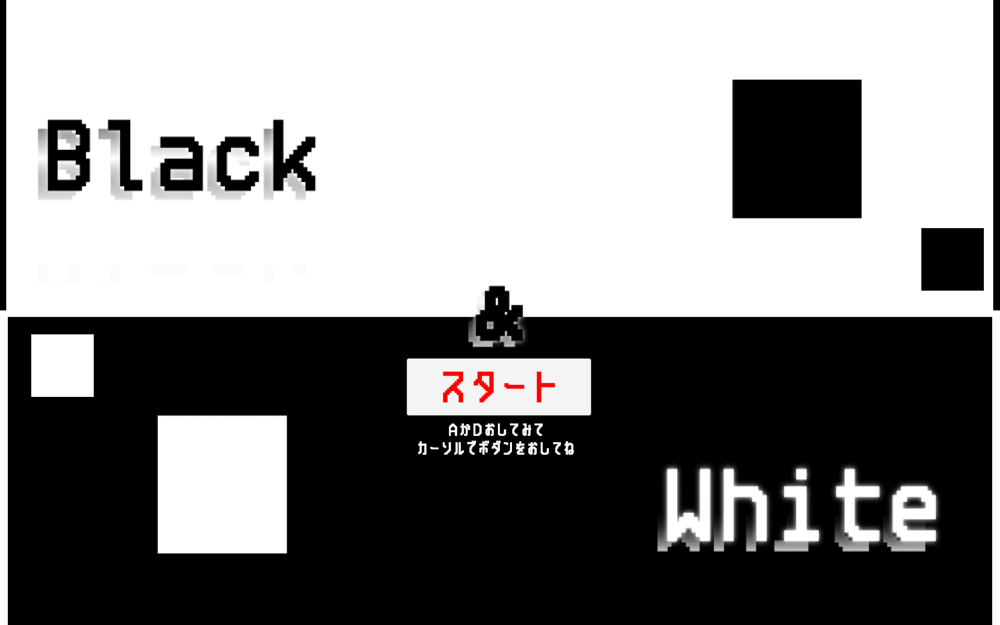

担当: ソロ開発
出展: Web公開
帰宅中...キーホルダーでゲームした懐かしさを...
手軽にでき、スマホでもPCでもプレイできる！
さあ！君の反射神経を試すとき！
 こだわり＆得られた経験
こだわり＆得られた経験
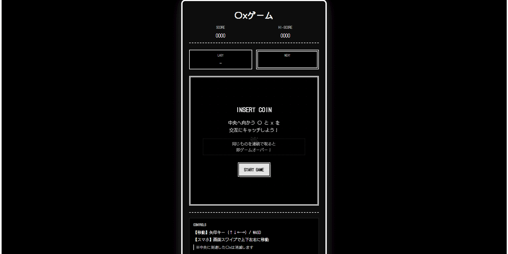


お客様がどのジャンルのゲームをプレイするかを注目し流行りを把握
そして遊んでいただいた反応を見てゲームのブラッシュアップを行い
翌日につなげる行動力を高めました！


頭脳戦と確率のゲーム！役づくりと押し引きの戦略を考えるのが大好きです。
大人の方と会話するいい機会なので言葉遣いやコミュニケーション能力を高めています！

癒しの相棒。お家でまったり過ごすときの最高のパートナーです。
企画で行き詰った時に遊びリフレッシュしています！

濃厚な家系ラーメンが好物！美味しいお店の開拓が日課です。
美味しさの為なら何処へでも行ける情熱と行動力があります！

好きなゲーム作品のグッズやフィギュアをコレクションして楽しんでいます。
インプットとして残し制作する時に使える物はないかと考えています！
企画、制作に関するご連絡や、作品へのご意見などはメールやXのダイレクトメッセージ等でお気軽にご連絡ください。
@katayama_589